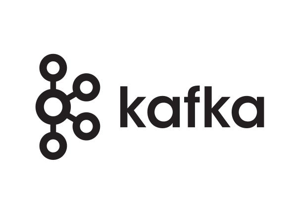
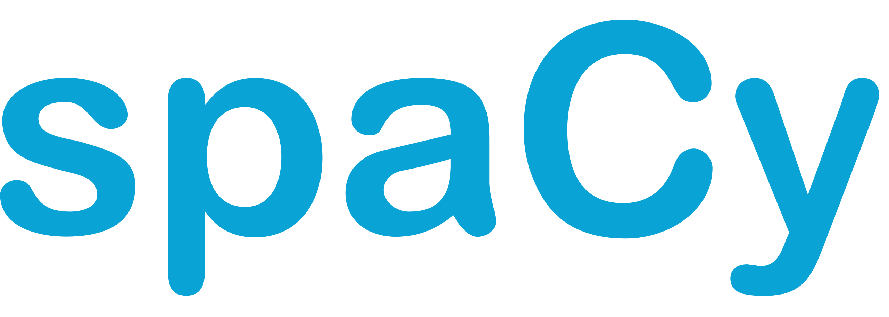

Project's objective
Given the new candidate recruitment techniques based on AI algorithms and the considerable number of job offers we apply to, which at first glance seem to match our profile but are ultimately rejected by AI algorithms, it becomes imperative to change the situation and leverage AI to optimize our job search.
The project aims to perform stream analytics on job postings on job search platforms in order to automate and optimize my search for my final internship (PFE) and select the offer that best matches my profile.
The project encompassed a range of tasks, including:
- Gathering data by scraping job postings from job search platforms.
- Establishing an analytics data pipeline utilizing Kafka and Spark Streaming for real-time data storage and processing.
- Employing natural language processing to analyze resumes and job descriptions, extracting the most pertinent skills and keywords.
- Visualizing the results to identify the optimal matches.
- Enhancing my resume by incorporating the appropriate keywords extracted from job descriptions that align perfectly with my profile.
Project information
- Category: Data engineering & NLP
- Client: myself (Personal project)
- Project date: Janvier, 2022
- Project Presentation: Powerpoint
- Project Github URL: github code
Technologies

